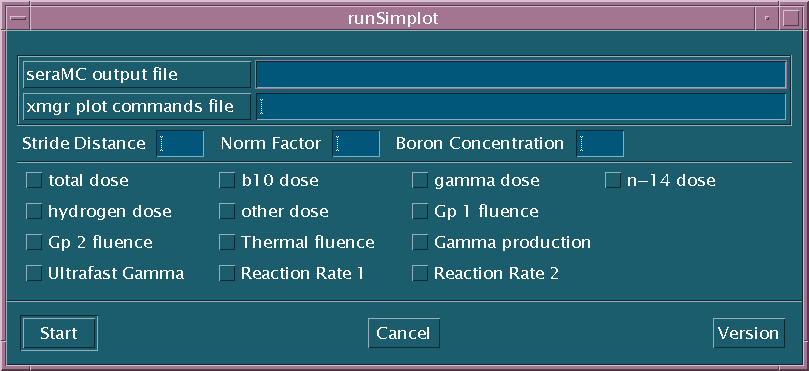
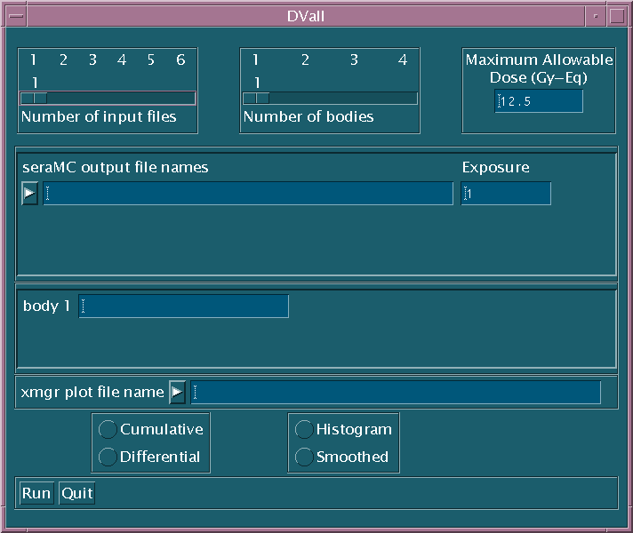
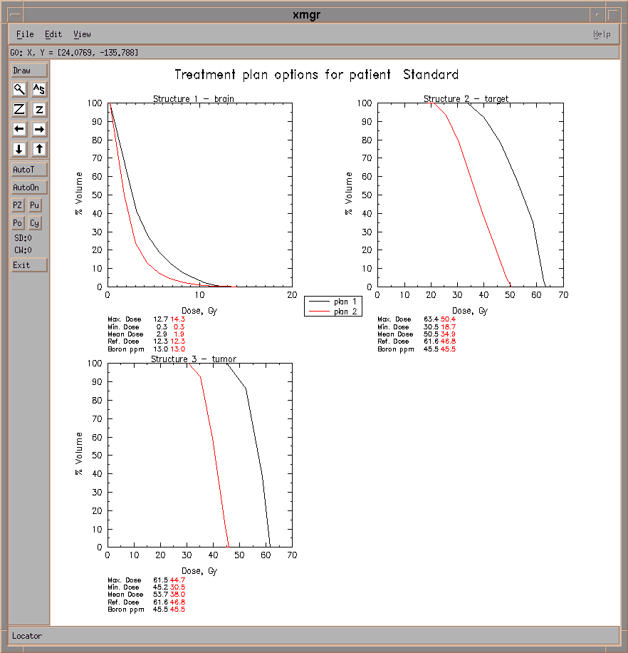

SERA
Simulation Environment for Radiotherapy Applications
User's Manual
Version 1C0

SERA
Simulation Environment for Radiotherapy Applications
User's Manual
Version 1C0

10. 2D Dose Plotting Tools
After a plan is developed, two separate tools are used to plot the dose results, and a third tool is used to determine the patient positioning. These tools are located in $SERA_BIN, and all are currently launchable from the command line; the plotting tools may also be launched from the SERA main menu or cross launched from any other SERA module by selecting the desired action. The two plotting modules all invoke the xmgr two-dimensional plotting code to display the results of the request.
Note: the plotting tools have recently
been re-written, and they are no longer compatible with output files from
older (pre-1B0) versions of seraMC. For these tools to be used with
previous seraMC runs, the edits MUST be reperformed with seraPlan.
Simplot is an ancillary program that reads the seraPlan line-edit output file (.lin) and invokes the xmgr plot code for each instance of a line edit.
In the line edit, dose/depth data are available for
0 Total dose
1 10B dose
2 Gamma dose
3 14N dose
4 Hydrogen (fast) dose
5 Other dose
6 Group 1 (fast) fluence
7 Group 2 (epithermal) fluence
8 Thermal fluence
9 Gamma production
a Ultrafast gamma production
b Reaction rate 1
c Reaction rate 2,
where the leading single digit (in hex) represents the code provided to force that dose component to be plotted.
As an example, the simplot program might be invoked with:
simplot case1.lin case1.xmgr 2 96 12.3 0 2 3 4
Here, case1.lin is the seraMC output file, and case1.xmgr is a new file that will contain the plot commands and data for xmgr. If there is more than one plot, simplot adds an increment to the plot file name.
Simplot begins generating plot data from 0.0 to the depth obtained from the last point in the line plot. The third argument to simplot (2) is a sample rate, or stride distance. The 2 specifies that every other point in the line plot is used for the plot. The next two arguments (96 and 12.3) are the normalization factor and boron concentration to be folded into the dose data. Generally, the normalization factor is either 1, for no normalization, or the exposure in MW-min. The boron concentration is applied only to the 10B dose and the total dose, where the total dose is the sum of all the dose components.
The final 0 2 3 4 argument tells simplot to provide plots for the total dose, gamma dose, the 14N dose and the fast dose. An xmgr window is then opened for each line edit instance, and the user can modify the title and perform any other editing of the plot. Then the user can print the plot and save the plot file using the capabilities of xmgr.
If one simply enters simplot, the routine will prompt the user for the necessary input data, and then present the requested components in an xmgr window.
Simplot may be executed from the main menu by selecting Dose-Depth Plot under the SeraPlot menu (see Figure 3.6). A widget is then presented to the user as shown in Figure 10.1. Once the Start button is selected, plots of the line edits will appear. This widget may also be called from the command line by typing runSimplot.

Figure 10.1: Simplot Widget
DVall is an ancillary program that reads the seraPlan dose-volume histogram output file (.dvh) from up to six different cases and provides dose-volume histogram plots for as many as four selected bodies on a single page. This allows multiple treatment plans to be compared simultaneously and easily.
The DVall code is entirely widget-driven and cannot be run directly from the command line. To invoke the code, either type DVall from the command line, or select DVall from the Dosimetry Display menu of the main menu. This will pop up the widget, which is shown in Figure 10.2.

Figure 10.2. DVall Widget.
The widget interface asks the user to provide the number and name of each seraMC output file and the number and name of each body in these files. The body names must be the same in all seraMC cases; otherwise, DVall will not pick up the information for non-matching body names. The maximum allowable dose input parameter causes DVall to calculate the exposure time necessary to achieve this dose at the reference point in healthy tissue. This information is written to the output file (plot_file_name.out).
Dose-volume data may be displayed either as cumulative or differential dose-volume plots, and in either histogram or smoothed form. After the user has supplied the necessary information to the widget interface, the code is then executed by selecting the Run button from the bottom of the widget. DVall then produces an xmgr plot file, written to plot_file_name.xmgr, containing the dose-volume histogram data for all requested cases and bodies. A sample plot output for two cases and three bodies is shown in Figure 10.3.

Figure 10.3. DVall plot display.
Patient positioning for BCNT currently employs a system of beads and tatoos placed on the patient during final imaging procedures. This method is simple to implement and should be sufficiently accurate if care is taken. It is also very laborious to position the patient using this method, and it is likely that the method will be either improved or replaced.
Because the preferred patient positioning method has yet to be determined, patient positioning is treated in an ad hoc fashion, and both the source and executable files used for patient positioning are supplied with the software distribution. The source is being supplied until a preferred method is determined so that the field changes may be made if necessary. To run this code, enter from the command line:
position input_file
The user will be prompted for the x-, y-, and z-coordinates of the various beads. These coordinates are obtained by using the locate button on the slice widgets displaying the beads.
The input file may appear as:
THETA PHI numBEADS -13.0 75.0 4 TARGET X Y Z -14.00 41.80 48.00 BEAM X Y Z -20.92 71.77 56.24where THETA is the azimuthal patient rotational angle and PHI is the polar rotational angle. A more detailed discussion of the coordinate system used is available in the seraMC manual, but note that, by necessity, the beam is rotated instead of the patient, so that the patient rotational angles are specified counter to seraMC angles. The target and beam coordinates are generated by seraMC, and the beam values are given with the beam rotated. The target point is the origin of rotation, so it is invariant.
The position code rotates the beam back to its original position. Then it rotates the patient (beads) by the angles specified in the input file. The final bead coordinates are expressed relative to the beam exit point.
Admittedly, this is a cumbersome and complicated process, and it
is necessary to provide one-on-one training of the user. Much work
remains to get this process automated.